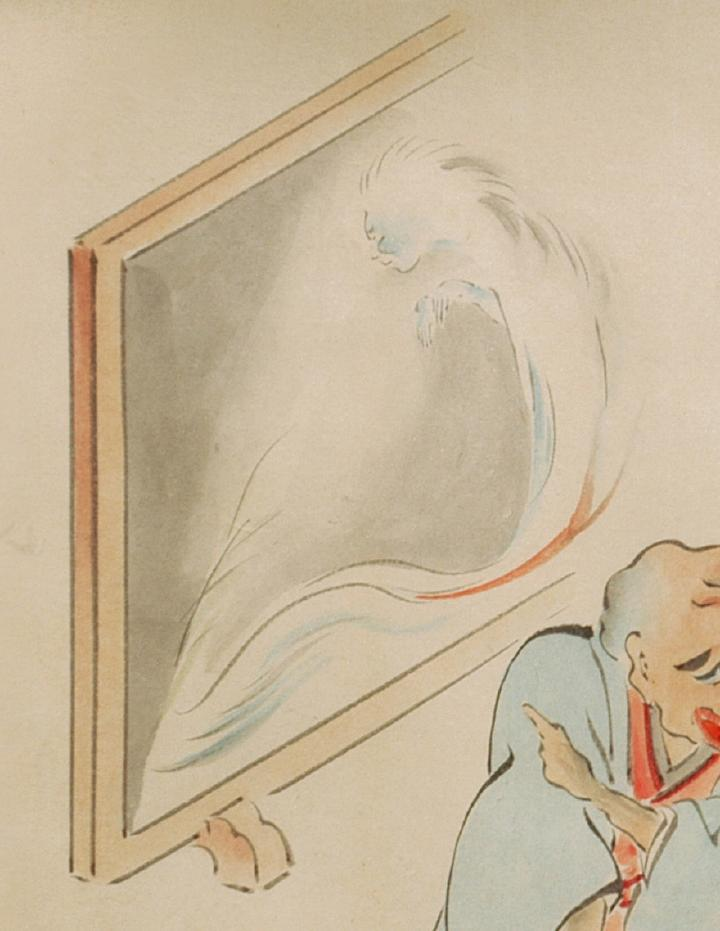

衝立に描かれた幽霊。白い体、白い髪の毛、白い着物姿で、足が無く両手を前に垂らしている。
出典：親書誌：U426_nichibunken_0053：化物婚礼絵巻；バケモノコンレイエマキ／日付：2006／資源識別子：U426_nichibunken_0053_0001_0005
Copyright (c)2010- International Research Center for Japanese Studies, Kyoto, Japan. All rights reserved.